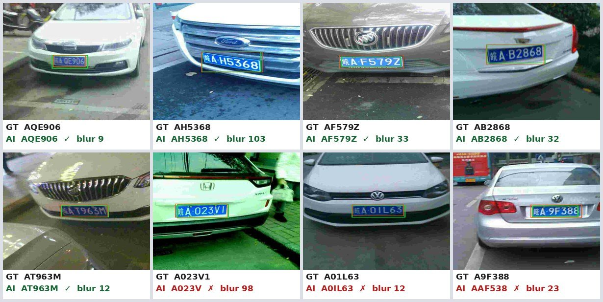
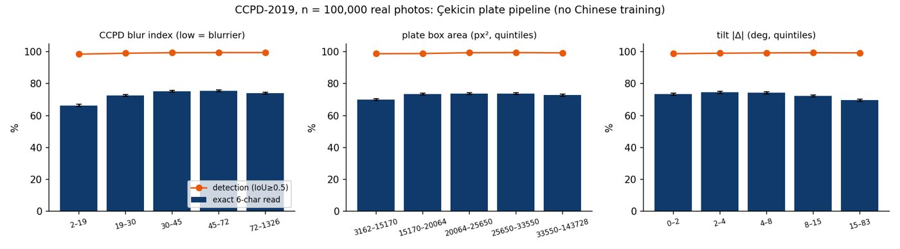
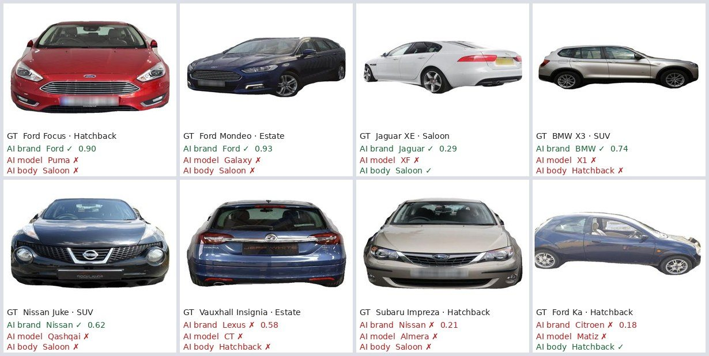
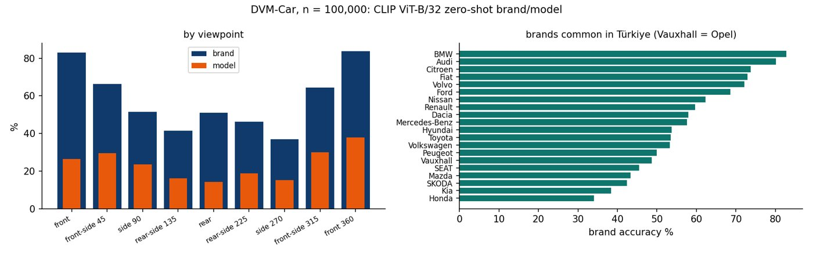
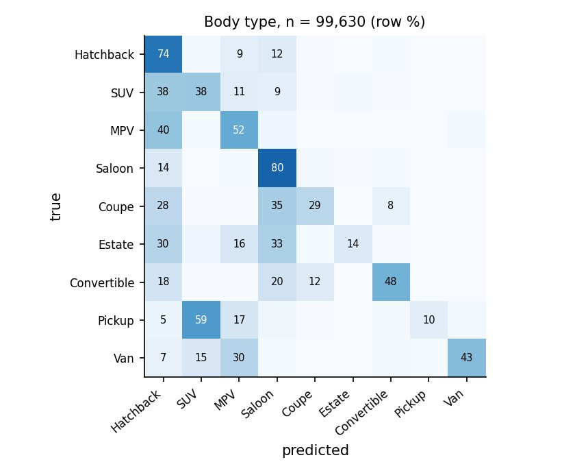

تست روی ۲۰۰ هزار عکس + دیباگ
قبلاً حدود ۲٬۰۰۰ عکس تست کرده بودیم. حالا 200,000 عکس از دو دیتاست جدید تست شد و ۲۰ دیتاست بررسی شد.
یافتهها و دیباگ
- باگ ۱: مدل کوانتیزه int8 دقت برند را کم کرد ← مدل fp32.
- باگ ۲: روش برند 37.8% ← 60.0% (جمع احتمال مدلها).
- پلاک: با قانون فرمت کشور 72.8% ← 77.7%.
- پلاک: اگر اطمینان ≥ ۰٫۹۵ باشد دقت 87.4٪ (پوشش 73٪).
- تاری بیشترین اثر را روی خواندن پلاک دارد (روی عکس واقعی هم تأیید شد).
- روی عکسهای ترکیه: برند CLIP 40.3% در برابر VLM فعلی 86.6% ← VLM مدل اصلی میماند.
- باگ داده: ۳۴۵ برچسب DVM با تاریخ اکسل خراب شده (Saab 9-3 ← 09-Mar).
- هیچ دیتاست بزرگ عمومی ترکیه در HF نیست؛ دو دیتاست Kaggle ترکیه کلید لازم دارند.
CCPD پلاک چینی است (تست تغییر دامنه، نه دقت پلاک ترکیه). DVM-Car بازار انگلیس و فقط غیرتجاری است.
200 bin görüntüde test + hata ayıklama
Önce yalnızca ~2.000 görüntü test edilmişti. Şimdi iki yeni veri setinden 200,000 görüntü test edildi ve 20 veri seti incelendi.
Bulgular ve hata ayıklama
- Hata 1: int8 kuantize CLIP marka doğruluğunu düşürdü → fp32.
- Hata 2: marka yöntemi 37.8% → 60.0% (model olasılıklarının toplamı).
- Plaka: ülke format kuralıyla 72.8% → 77.7%.
- Plaka: güven ≥ 0,95 iken doğruluk %87.4 (kapsam %73).
- Plaka okumayı en çok bulanıklık etkiliyor (gerçek fotoğraflarda da doğrulandı).
- Türk fotoğraflarında: CLIP marka 40.3%, mevcut VLM 86.6% → VLM ana model kalıyor.
- Veri hatası: 345 DVM etiketi Excel tarihine dönmüş (Saab 9-3 → 09-Mar).
- HF’de büyük açık Türk veri seti yok; iki Kaggle Türk veri seti anahtar gerektiriyor.
CCPD Çin plakasıdır (alan kayması testi, Türk plaka doğruluğu değil). DVM-Car İngiltere pazarı ve yalnız ticari olmayan kullanım.
Testing on 200k images + debugging
Before, only ~2,000 images had been tested. Now 200,000 images from two new datasets were tested and 20 datasets were reviewed.
Findings and debugging
- Bug 1: int8-quantised CLIP lost brand accuracy → fp32.
- Bug 2: brand method 37.8% → 60.0% (sum of model probabilities).
- Plates: with a country format rule 72.8% → 77.7%.
- Plates: at confidence ≥ 0.95 accuracy is 87.4% (coverage 73%).
- Blur hurts plate reading most (confirmed on real photos).
- On Turkish photos: CLIP brand 40.3% vs current VLM 86.6% → the VLM stays the main model.
- Data bug: 345 DVM labels were turned into Excel dates (Saab 9-3 → 09-Mar).
- No large public Turkish dataset on HF; two Turkish Kaggle sets need a key.
CCPD plates are Chinese (a domain-shift test, not Turkish plate accuracy). DVM-Car is UK market and non-commercial only.
CCPD-2019 · 100,000 plates


DVM-Car · 100,000 cars


